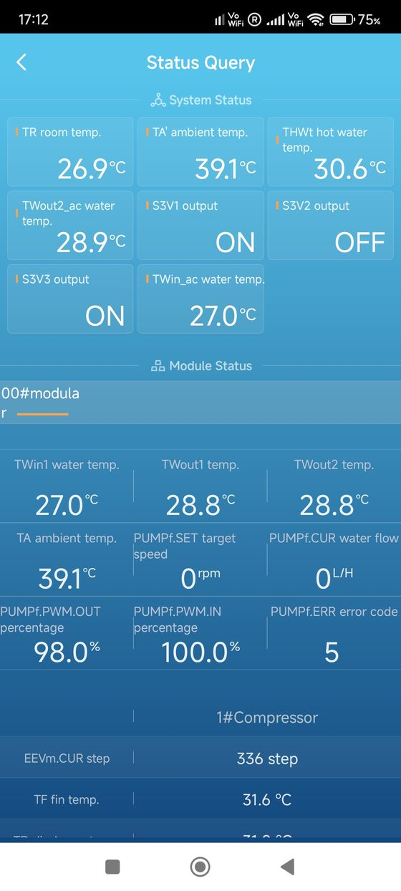

1 Kaj je ta aplikacija
Aplikacija Huilian Smart za telefon se s toplotno črpalko poveže prek Wi-Fi in zaslon za zaslonom zrcali žični krmilnik. Vse spodaj opisano lahko storite na kateri koli od obeh naprav. Meniji imajo tri ravni, ki so v tem vodniku barvno označene glede na to, komu so namenjene.
🟢 Uporabniška raven
Uporabnik Vsakodnevna uporaba: vklop/izklop con, nastavitev temperatur, sanitarna voda, časovniki, počitniški način. Varno za spreminjanje kadar koli. Brez gesla.
🔵 Monterska raven
Monter Za Advanced Para. (napredni parametri, geslo 123456): kako je sistem zgrajen — cone, obtočna črpalka, rezervni grelniki, prednost TSV, tipala, pametno omrežje (Smart Grid). Spreminjajte samo ob zagonu.
🟠 Tovarniška raven
Tovarniško Kalibracija kompresorja, ventilatorja, ekspanzijskega ventila, odmrzovanja in zaščit. Ne spreminjajte — napačne vrednosti lahko poškodujejo kompresor ali razveljavijo garancijo.
- Tovarniške skupine (Compressor, Fan, EEV/EEVm/EEVs, Defrost, Protection, Working Frequency, Testing) so kalibracijske konstante. Navedene vrednosti so privzete vrednosti te naprave, zgolj v vednost.
- Ko zapuščate napredne nastavitve, se pomaknite na dno in pritisnite Logout (odjava), da bo naslednjič spet potrebno geslo.
- Aplikacija doseže napravo le, kadar sta telefon in krmilnik v istem omrežju Wi-Fi / na istem računu v oblaku.
3 Celoten zemljevid menijev
Celotno navigacijsko drevo aplikacije / krmilnika. Na zgornje tipke so vezana tri glavna področja: Query (🔍, poizvedba), Mode (način) in Set menu (⚙️, meni nastavitev). V meniju nastavitev je skoraj vse, na koncu pa je Advanced Para., ki odklene 16 skupin parametrov, opisanih v nadaljevanju.
- Current ErrorTrenutno aktivne napake
- StatusOdčitki tipal in izhodov v živo
- VersionProgramska oprema plošče / krmilnika
- ECMMerjenje energije (24h / 30d / 12m / 10y)
- EEBUSPovezava s Huawei zeleno energijo (izbirno)
- AutoNaprava izbere ogrevanje ali hlajenje glede na zunanjo temperaturo
- CoolSamo hlajenje
- HeatSamo ogrevanje
- On/Off cone + drsnik temperature
- On/Off sanitarne vode + ciljna temperatura
- Display SettingJezik · svetlost · zaklep · časovna zakasnitev zaslona · zvok tipk
- Time & Date
- Timer
- Timer On/Off → Daily / Weekly / Cancel (dnevno / tedensko / preklic)
- Sterilization Timer (časovnik sterilizacije)
- Silent Timer (Level 1 / 2) (časovnik tihega načina)
- DHW Pump (cirkulacijska črpalka TSV)
- Wi-FiSeznanjanje / ponastavitev Wi-Fi (Smart mode)
- User ParametersNastavljene vrednosti (tudi v napredni skupini 01)
- Manual Defrost
- History Errors
- Force Tank Heater / Force DHW / Force I-heat / Force AHS / Floor Dry-up
- Holiday ModeAway / Home (odsotnost / doma)
- Advanced Para. 123456
- Parameter Settings → 16 skupin ↓
- Manual Test · Modify Password · Reset
- Ability / Pump / Cool / Heat / Hotwater Test
- Recycle Refrig · Floor Preheat · Floor Dryup Timer
- Logout
4 Domači zaslon in vsakodnevna uporaba
Glavni zaslon prikazuje po eno ploščico za vsako aktivno cono in ploščico za sanitarno vodo. Tapnite številko, da z drsnikom
nastavite ciljno temperaturo; tapnite ikono za vklop, da preklopite to cono. Katero postavitev vidite, je odvisno od tega, kako je bil sistem
nastavljen (parameter 35.PANEL_CTRL / WIRE_SW_TYPE).
Štiri možne postavitve domačega zaslona
1 · Ena cona (voda) + sanitarna voda — ena cona z regulacijo temperature vode in TSV. Najpreprostejša.
2 · Ena cona (prostor) + sanitarna voda — krmilnik meri sobno temperaturo in regulira na ciljno sobno temperaturo. Krmilnik mora biti nameščen v notranjosti.
3 · Dve coni (A voda + B prostor) + sanitarna voda — npr. radiatorji na A, talno ogrevanje s sobno temperaturo na B.
4 · Dve coni (A voda + B voda) + sanitarna voda — dva kroga z regulacijo temperature vode.
Ikone stanja na domačem zaslonu
🔒 Zaklep zaslona — pred upravljanjem tapnite za odklep (nastavitev v meniju Display).
⏱️ Časovnik aktiven — velja dnevni/tedenski urnik.
🔇 Tihi način — deluje tihi način (omejena hitrost ventilatorja/kompresorja).
🏝️ Počitnice — aktiven počitniški program (odsotnost ali doma).
♨️ Sterilizacija — poteka cikel proti legioneli.
17.HOT_WATER nastavljen na ON, nato tapnite ploščico sanitarne vode na domačem zaslonu.5 Meni Query 🔍 Uporabnik
Diagnostika samo za branje — nič tukaj ne spremeni delovanja naprave.
Current Error & History Errors (trenutne in pretekle napake)
Current Error prikazuje napake, ki se pojavljajo zdaj; tapnite eno za podrobnosti. Napake, ki izpolnjujejo pogoj za ponastavitev, lahko tukaj počistite.
History Errors (v meniju nastavitev) hrani dnevnik preteklih napak s časovnimi žigi — uporabno pri servisnih klicih. Brisanje izbriše celoten dnevnik, zato bodite previdni.
Version (različica)
Prikaže oznaki programske opreme glavne plošče in krmilnika. Servis jih bo zahteval pri diagnostiki. Primeri družin na tej platformi: glavna plošča X1.HL087A…, krmilnik X1.HD016A…
ECM — merjenje energije
Zgodovina porabljene električne energije in oddane toplote v zadnjih 24 h / 30 d / 12 m / 10 y, z izkoristkom. Okrajšave:
CQ / HQ / WQ | Oddana moč pri hlajenju / ogrevanju / sanitarni vodi |
CP / HP / WP | Porabljena električna energija v načinu hlajenja / ogrevanja / sanitarne vode |
EER / COP / W-COP | Grelno/hladilno število za hlajenje / ogrevanje / sanitarno vodo |
EEBUS (izbirno)
Poveže toplotno črpalko s sistemom Huawei SmartAssistant / FusionSolar, da prednostno uporablja brezplačno/poceni električno energijo iz FE (funkcija »OHPCF«). Potrebna sta modul EEBUS in ustrezna programska oprema. Opomba: v konfliktu je s funkcijo Smart Grid — omogočite le eno.
6 Set menu ⚙️ Uporabnik
Vse, kar ni oštevilčen parameter. To so postavke, do katerih pridete neposredno prek ikone zobnika.
Display Setting
Jezik, svetlost zaslona, vklop/izklop zaklepa zaslona, časovna zakasnitev zaslona (nastavite 0 = vedno vklopljen) in zvok ob pritisku tipk.
Time & Date
Nastavitev ure in koledarja. Časovniki in urniki so odvisni od pravilne nastavitve.
Timer → On/Off
Urnik Daily (dnevno, do 5 skupin: začetek, konec, način, temperatura) ali Weekly (tedensko); Cancel Timer naenkrat počisti vse časovne vklope/izklope. Neveljavna skupina (enak začetek/konec, prehod čez polnoč ali temperatura izven območja) se ne upošteva.
Timer → Sterilization
Urnik tedenskega segrevanja proti legioneli (npr. pet 21:00). Temperatura/trajanje sta določena z uporabniškimi parametri 14–16. Ročni vklop/izklop ima prednost pred časovnikom.
Timer → Silent
Tihi način po urniku, Level 1 ali Level 2 (L2 omeji hitrost ventilatorja/kompresorja bolj kot L1). Dve časovni skupini.
Timer → DHW Pump
Urnik cirkulacijske črpalke sanitarne vode, da je topla voda na pipi v nastavljenih oknih takoj na voljo.
Wi-Fi
Prikaže stanje Wi-Fi, MAC in način seznanjanja. Za (ponovno) seznanjanje: tapnite Reset Wi-Fi → počakajte na »distributing in Smart mode« → dokončajte seznanjanje v aplikaciji. (Ponovno seznanjanje odvzame dostop staremu računu.)
User Parameters
Bližnjica do vsakodnevnih nastavljenih vrednosti (način, ciljne temperature hlajenja/ogrevanja/prostora/sanitarne vode). Enake vrednosti kot v napredni skupini 01 spodaj.
Manual Defrost
Vsili odmrzovanje, če modul deluje in razmere na uparjalniku/vodi to dopuščajo; sicer ostane, kot je.
Force Tank Heater (T-heat)
Prisilno vklopi električni grelnik v hranilniku TSV za dogrevanje sanitarne vode — tudi med hlajenjem/ogrevanjem hiše.
Force I-heat
Prisilno vklopi rezervni električni grelnik za ogrevanje prostorov (IBH). Za zasilno ogrevanje ali testiranje.
Force Hot Water
Prisilno preklopi celoten sistem v pripravo TSV (kompresor in vsi grelniki delujejo za hranilnik).
Force AHS
Prisilno vklopi zunanji/dodatni vir toplote (npr. kotel) v načinu ogrevanja ali sanitarne vode.
Floor Dry-up
Program sušenja estriha za novo talno ogrevanje. Na voljo le pri dvo-/tricónski regulaciji in ko je naprava v pripravljenosti.
Holiday Mode
Away: minimalna zaščita pred zmrzaljo med vašo odsotnostjo (nastavite začetek/konec ter kaj od ogrevanja/TSV/sterilizacije ostane aktivno). Home: počitniški urnik, ki za izbrano obdobje preglasi običajne časovnike.
7 Advanced Para. 🔵 geslo 123456
Set menu → Advanced Settings → vnesite 123456. S tem odklenete monterski/tovarniški del. Poleg Parameter Settings (16 skupin spodaj) vsebuje servisna orodja:
Parameter Settings
16 skupin parametrov — celoten razložen pregled je v §8.
Manual Test
Ročno krmiljenje posameznih komponent (ventili, obtočna črpalka, grelniki) za preverjanje vezave.
Ability / Pump / Cool / Heat / Hotwater Test
Vnaprej pripravljeni zagonski testi za vsako funkcijo.
Recycle Refrig.
Pomoč pri odčrpavanju / zajemu hladiva med servisom.
Floor Preheat & Floor Dryup Timer
Postopno predgretje in časovno voden program sušenja estriha za talno ogrevanje.
Modify Password · Reset · Logout
Sprememba monterskega gesla, ponastavitev parametrov in Logout za ponovno zaklepanje menija.
8 Pregled parametrov — vseh 16 skupin
Vsi parametri, odčitani z zaslonskih slik vaše naprave, z razlago. »Ta namestitev« je vrednost, ki jo ima vaša naprava trenutno nastavljeno. Iščite po kodi ali pomenu ali filtrirajte na eno skupino. Barvne oznake kažejo, komu je posamezna skupina namenjena.


| Koda | Ta namestitev | Pomen |
|---|
9 Status query (pregled stanja) — razlaga odčitkov v živo
Query → Status navaja vse temperature, ki jih naprava meri, in vse izhode, ki jih krmili, razdeljeno na System Status, Module Status in Compressor. Puščica na desni strani vrstice pomeni, da je ta izhod trenutno vklopljen. Spodnje vrednosti so primeri odčitkov z vaših zaslonskih slik.

| Oznaka | Pomen | Primer |
|---|---|---|
| SYSTEM STATUS | ||
TR | Sobna temperatura | 26.9 °C |
TA' | Zunanja temperatura okolice | 39.1 °C |
THWt | Temperatura hranilnika sanitarne vode | 30.6 °C |
TWout2_ac | Temperatura vode za ogrevanje/hlajenje (A/C) | 28.9 °C |
TWin_ac | Temperatura povratne vode A/C | 27.0 °C |
S3V1 / S3V2 / S3V3 | Izhodi 3-potnih elektromagnetnih ventilov (TSV / cona / mešanje) | ON / OFF / ON |
| MODULE STATUS (00#) | ||
TWin1 / TWout1 | Voda vstop / izstop ploščnega izmenjevalnika | 27.0 / 28.8 °C |
TWout2 | Izstop vode iz modula | 28.8 °C |
TA | Temperatura okolice modula | 39.1 °C |
PUMPf.SET / .CUR | Ciljna hitrost črpalke / dejanski pretok | 0 rpm / 0 L/H |
PUMPf.PWM.OUT / .IN | PWM izhod / povratni signal črpalke % | 98 / 100 % |
PUMPf.ERR | Koda napake črpalke (0 = OK) | 5 |
| 1# COMPRESSOR | ||
EEVm.CUR | Odprtost glavnega ekspanzijskega ventila (koraki) | 336 |
TF | Temperatura zunanjega uparjalnika (lamel) | 31.6 °C |
TD / TS | Temperatura na tlačni / sesalni strani kompresorja | 31.8 / 32.5 °C |
TES | Temperatura tipala ekonomizerja / uparjalnika | 30.2 °C |
PRSs | Sesalni tlak | 9.8 bar |
SHSV / SHPV.EEVm | Pregretje, sesalna / tlačna stran | 2.0 / 2.3 °C |
TAFD | Tipalo odmrzovanja na tlačni strani (−99.9 = ni vgrajeno) | −99.9 °C |
COMPf.SET / .CUR | Ciljna / dejanska hitrost kompresorja | 0.0 rps |
INVT.Vout/Iout/Vin/Iin | Izhodna/vhodna napetost in tok inverterja | 0.0 |
INVT.T / .INFO | Temperatura inverterskega modula / koda stanja | 39.4 °C / 0 |
FAN1.SET / .CUR | Ciljna / dejanska hitrost ventilatorja | 0 rpm |
R290.ERR | Napaka tipala plina R290 (0 = OK) | 0 |
10 Slovar kod
Predpone in okrajšave, ki se pojavljajo v vseh menijih. Za skok uporabite iskanje.
| Koda | Ime | Pomen |
|---|